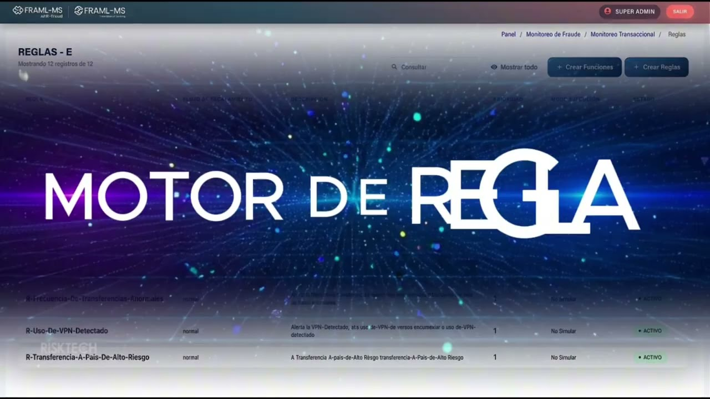

Detén el fraude antes de que se convierta en pérdida.
Un solo ecosistema que detecta en tiempo real, entiende con inteligencia artificial y actúa contactando al cliente en segundos. Motor transaccional, IA cognitiva y validación automática por WhatsApp y voz, trabajando como un solo equipo.
Detecta y gestiona el fraude desde un solo módulo.
- Motor de reglas que tu equipo crea y ajusta
- Monitoreo transaccional en tiempo real
- Alertas y casos en una sola consola

Al reproducirlo, YouTube puede usar sus propias cookies. Más información.
Detectar. Entender. Actuar.
FRAML MS AFT reúne en una sola plataforma lo que normalmente requiere tres proveedores: el motor de decisión, la inteligencia analítica y el contacto automático con el cliente.
Módulos AFT
- Reglas dinámicas y modelos de IA/ML con datos propios
- Perfil y hábitos de consumo de cada cliente
- Gestión de alertas con escalamiento inteligente
- Integración sin código con Tramas Dinámicas
Cerebrito
- Consultas en lenguaje natural
- Optimización de reglas sugerida por IA
- Grafos de riesgo en red
- Huella de dispositivo y telemetría móvil
Alert Defense
- Chat Defense por WhatsApp oficial
- Voice Defense con agente de voz IA
- Bloqueo preventivo o liberación inmediata
- Audio, transcripción y trazabilidad completa
Una sola plataforma, una sola integración, una sola vista del riesgo: fraude y LA/FT en el mismo sistema.
Todo lo que tu equipo de fraude necesita, en una sola consola.
Motor de decisión en tiempo real y near real-time, multicanal (web, app, ATM, POS, call center) y multitenant, diseñado para que el analista decida rápido y con evidencia.
Visibilidad gerencial y operativa en tiempo real
Indicadores que se actualizan con cada transacción que entra por la API, y una ficha de cliente que muestra cómo se comporta normalmente.
- Métricas clave: alertas del día, riesgos críticos, transacciones evaluadas y monitoreos activos.
- Gestión del equipo: casos cerrados por analista y fraude evitado por regla.
- Hábitos de consumo: montos promedio, canales, horarios y desviaciones frente a su segmento.
- Reportes BI: consultas SQL personalizadas y exportación CSV/XLSX para informes corporativos y regulatorios.
Panel gerencialActualizado
Fraude evitado por reglaÚltimos 12 días
Reglas que se ajustan a tu negocio, no al revés
El analista de riesgo diseña, activa y gobierna reglas sin depender de desarrollo, y gestiona cada alerta con trazabilidad completa.
- Motor de reglas dinámicas: acumulados, velocidad, combinaciones de canal, geografía, BINs y códigos de respuesta.
- Bandeja de alertas: bloquear, confirmar o descartar en un clic, con historial y bitácora del analista.
- Flujos de escalamiento: los casos de mayor severidad suben automáticamente a supervisión o comité.
- Listas de excepciones: IPs seguras, comercios en lista negra y exclusiones temporales (ej. viajes) para reducir fricción.
Reglas en producción6 activas
COUNT(tx) > 5 WHERE t < 10 mindevice_new AND amount > p95first_beneficiary AND channel = APPmerchant_id IN blacklistPrueba cada regla con datos reales antes de encenderla
Mide la efectividad y anticipa el impacto en falsos positivos sobre tu histórico. Decide con números, no con intuición.
- Simulador de reglas: evalúe nuevas condiciones contra transacciones históricas.
- Simulador de transacciones y alertas: reproduzca escenarios de ataque y valide la respuesta del motor.
- Modo sombra: los modelos de IA corren en paralelo antes de tomar el control del scoring.
Simulación · Regla “Velocidad APP”Backtesting
Ilustración con fines demostrativos. Los resultados se calculan con los datos de cada entidad.
Conecta cualquier canal sin tocar una línea de código
Nuestro diferencial de integración: mapee y convierta mensajes transaccionales en tiempo real, y exponga o consuma servicios en minutos, sin despliegues.
- Formatos: ISO 8583, XML y JSON, con lectura recursiva de campos anidados.
- Web Services REST y SOAP: endpoints GET/POST con autenticación, listos en minutos.
- Bases de datos, archivos, sockets y ETL: PostgreSQL, SQL Server, Oracle; longitud fija o variable; lotes o tiempo real.
Fuentes conectadasSin código
Modelos entrenados con los datos de tu entidad
La IA identifica patrones que los umbrales estáticos no ven, y los grafos revelan las conexiones entre cuentas, comercios y sucursales.
- Supervisados: Random Forest y Gradient Boosting (XGBoost, LightGBM) para priorizar alertas.
- No supervisados: detección de outliers transaccionales y patrones por distancia.
- Ciclo de vida controlado: métricas de precisión, recall y falsos positivos; reentrenamiento continuo.
- Grafos de correlación: flujos circulares, cuentas puente y transferencias encadenadas.
Modelos desplegadosCiclo de vida
v4.2 · Recall 0,91 · AUC 0,95v2.0 · 14 clústeresv1.3 · shadow testinggrafos de correlaciónMétricas ilustrativas.
Gobierno, trazabilidad y control listos para el auditor
Cada acción queda registrada y cada usuario ve solo lo que debe ver. La arquitectura multitenant aísla por completo la operación de cada entidad.
- Auditoría inmutable: marca de tiempo, IP, usuario, módulo y detalle de cada cambio.
- Perfiles granulares: permisos por módulo, botón y visibilidad de datos sensibles.
- Políticas de acceso: complejidad y expiración de contraseñas, bloqueos y sesiones.
- Multitenant y grupos empresariales: reglas, alertas y tramas segregadas por compañía.
Bitácora de auditoríaInmutable
supervisor.fraude · 10.4.12.8analista.03 · 10.4.12.21admin.riesgos · 10.4.12.2analista.07 · sin permiso
Pregunta en tu idioma. Obtén respuestas de analista experto.
Cerebrito es la capa cognitiva de FRAML MS. Analiza el universo transaccional en tiempo real, conversa con tu equipo en lenguaje natural y te dice qué regla mejorar, qué modelo revisar y qué red aislar.
Chat IA
“¿Cuántas alertas se generaron esta semana?” Resúmenes y explicaciones al instante.
Monitor forense de reglas
Eficiencia de cada regla y sugerencias de la IA: calibrar, relajar o archivar reglas silentes.
Auditoría de modelos
Revisión de algoritmos en R y Python, calidad del dato y proyección antes de producción.
Dashboard de inteligencia
Universo transaccional, alertas, precisión global y reglas activas en una sola vista.
El fraude organizado deja huellas. Cerebrito las conecta.
Un motor de grafos en tiempo real mapea cuentas, dispositivos e IPs. En lugar de evaluar transacciones aisladas, revela la red completa.
- Detección de clústeres: un mismo celular operando múltiples identidades o esquemas de dispersión de fondos (pitufeo).
- Ficha de inteligencia por nodo con nivel de riesgo de cada cuenta o terminal.
- Aislamiento inmediato de la red sospechosa, con un clic.
Blinda la app y el portal contra suplantación y ataques automatizados
Canvas fingerprint, Device ID único, IMEI, marca, modelo y resolución para detectar dispositivos suplantados.
IP pública y local, ISP, operador, uso de VPN y proxies para identificar redes de anonimización.
Detección de emuladores, ubicación GPS y GPS simulado (Mock GPS).
Tecnología propia + criterio experto en riesgo.
Con raíces desde 2002 en prevención de fraude y cumplimiento LA/FT, acompañamos a bancos, fintechs, cooperativas, fiduciarias y aseguradoras en Colombia y Latinoamérica.
Fraude y AML en una sola plataforma
FRAML MS unifica la capa de fraude y la de LA/FT, sin duplicar licencias ni infraestructura.
Go-Live en 4 meses
Integración al CORE vía API y Tramas Dinámicas; valor visible desde la marcha blanca.
Tus datos se quedan en tu entidad
Sin transferencia a terceros, conforme a la Ley 1581 de 2012 de protección de datos.
Infraestructura de clase mundial
Operación en Oracle Cloud (OCI), con 99,9% de disponibilidad comprometida.
Acompañamiento continuo
Calibración de reglas, comités mensuales de evolución y soporte experto 24×7 en incidentes críticos.
Hecho para Latinoamérica
Terminología y reportería alineadas con SFC, UIAF y reguladores de la región.


De la primera reunión a producción, con un plan claro.
Descubrimiento
Levantamiento de canales, riesgos y tipologías de fraude de tu entidad.
Configuración
Integración con Tramas Dinámicas, segmentación, reglas y modelos.
Pruebas y afinamiento
Validación en SandBox, capacitación y transferencia de conocimiento.
Go-Live
Salida a producción con acompañamiento y comités de evolución.
Mira FRAML MS AntiFraud operando con tus propios escenarios de fraude.
Agenda una demo de 45 minutos con nuestro equipo de especialistas. Te mostramos el flujo completo: de la transacción sospechosa a la decisión.